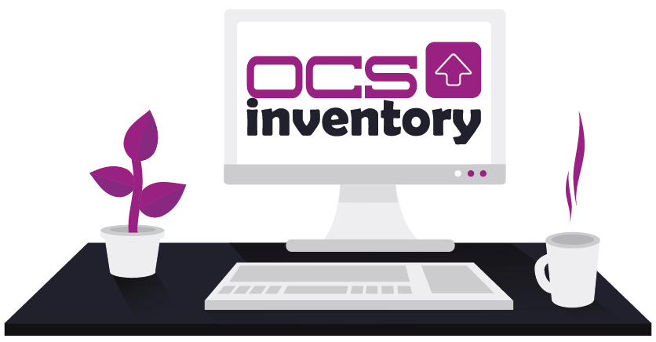

Bienvenue sur mon site pour mes projets étudiant de BTS SIO SLAM
Mes projets
Application ResaNet (PPE)
Application web de restauration (Client Léger). L'application devait répondre à la fois au besoin des usagers mais aussi du gestionnaire. Nous avons travailler à partir de fichiers pré-existants.
Application GSB Frais Visiteur
Appllication réalisée à l'aide du framework Symfony4 avec l'architecture MVC. Cette application permet la gestion des frais des visiteurs pendant leur prospection chez les praticiens.
Application GSB-RV
Appllication d'enregistrement et de suivi des rapports de visite. Java/Swing (Client lourd)
Application Gestion de suivi de Jeune
Application réalisé au cour de mon stage de 2e année de BTS. Cette application qui permet de suivre un jeune de son arrivée au départ d'une Mission Locale.

TP-OCS Inventory
Tp sur le gestion du parc informatique. Installation et configuration d'un outil d'inventaire.
TP-Amortissement
Fichier Excel permettant de réaliser des amortissement linéaire ou dégressif en fonction
de la date d'acquisition, de la base d'amortissement et du nombre d'années de l'utilisation du bien.